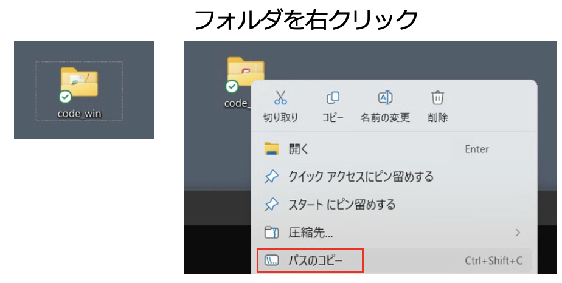

PowerShell 基本操作ガイド
このガイドでは，Windows環境での演習に必要なPowerShellの基本的なコマンドを説明します．
基本的なディレクトリ操作コマンド
1. pwd - 現在の場所を表示
Print Working Directoryの略．現在いるフォルダの場所を表示します．
PS C:\Users\YourName> pwd
Path
----
C:\Users\YourName
2. cd - フォルダを移動
Change Directoryの略．別のフォルダに移動します．
基本的な使い方
# 子フォルダに移動
cd Desktop
# 一つ上の階層に戻る
cd ..
# ルートディレクトリに移動
cd \
# 絶対パスで移動
cd C:\Users\YourName\Documents
# AI-Archプロジェクトの演習フォルダへ移動（例）
cd C:\AI-Arch\code_win
3. ls - フォルダの中身を表示
Listの略．現在のフォルダ内のファイル・フォルダ一覧を表示します．
PS C:\Users\YourName> ls
ディレクトリ: C:\Users\YourName
Mode LastWriteTime Length Name
---- ------------- ------ ----
d----- 2024/01/15 10:30 Desktop
d----- 2024/01/10 14:22 Documents
-a---- 2024/01/20 11:45 1234 sample.txt
表示の見方
d-----: ディレクトリ（フォルダ）-a----: ファイルLastWriteTime: 最終更新日時Length: ファイルサイズ（バイト）Name: ファイル・フォルダ名
便利なTips
タブ補完
ファイル名・フォルダ名の途中まで入力してTabキーを押すと自動補完されます．
# 例: "Doc"まで入力してTabキーを押す
cd Doc[Tab] → cd Documents
コマンド履歴の呼び出し
↑（上矢印）キーを押すと，過去に実行したコマンドを呼び出せます．
# 例: 前に実行したコマンドを再実行
↑キー → python pso_algorithm_win.py （前回のコマンドが表示される）
↓キー → 新しいコマンドへ移動
何度も同じコマンドを入力する必要がなく，効率的に作業できます．
パスの種類
| 種類 | 説明 | 例 |
|---|---|---|
| 相対パス | 現在地からの道筋 | cd Desktop |
| 絶対パス | ルートからの完全な道筋 | cd C:\Users\YourName\Desktop |
パスの区切り文字
PowerShellでは \（バックスラッシュ）を使用します．
AI-Arch演習での使用例
AI-Archの演習では，デスクトップに配置されたcode_winフォルダでPythonスクリプトを実行することになります．

3. 演習環境への移動と実行
方法1: エクスプローラーからパスをコピー
- デスクトップの
code_winフォルダを右クリック - 「パスのコピー」を選択
- PowerShellで以下を実行：
# code_winフォルダへ移動（右クリックでペースト）
cd "コピーしたパスを貼り付け"
方法2: 手動でパスを入力
# デスクトップへ移動してからcode_winへ
cd Desktop
cd code_win
# 現在地を確認
pwd
# PSOを実行
python pso_algorithm_win.py
トラブルシューティング
Q: "指定されたパスが見つかりません"エラー
A: パスが間違っている可能性があります．lsで現在のフォルダ内容を確認してください．
まとめ
これらの3つの基本コマンドを覚えれば，PowerShellでのフォルダ操作は十分可能です：
pwd- 今どこにいるか確認cd- 目的の場所へ移動ls- その場所に何があるか確認